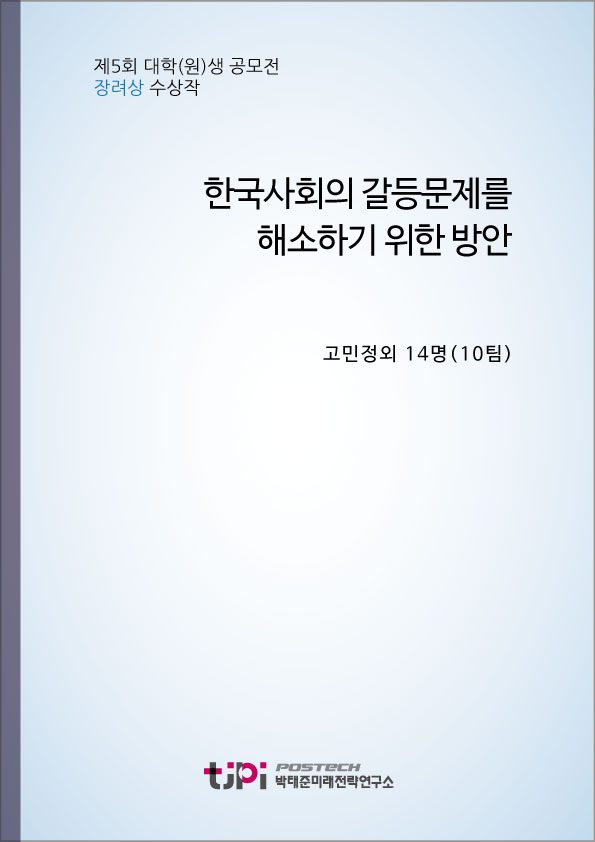

저자 고민정외 14명(10팀)보도일 2018-9-19

요 약
올해로 5회 째인 박태준미래전략연구소 대학생 및 대학원생 공모전이 ‘한국 사회의 갈등을 해소하기 위한 방안’이라는 주제로 열렸다. 세대 갈등, 계층 갈등, 가치관 갈등, 이념 갈등. 젠던 갈등의 해결 방안에 대해 전국 46새 대학에서 92개 팀이 공모했고, 우수상을 받은 13개 팀이 2018포스텍 청년비전캠프에 초대돼 발표를 했다
장려상을 수상한 10팀의 에세이는 약 A4 7장 분량의 짧은 글을 통하여 현 시대가 안고 있는 사회갈등요소들에 대한 젊은세대의 목소리를 담아내고 있다.
본 연구소에서는 현 한국사회가 안고 있는 갈등문제에 대해 저명학자들에게도 의뢰하였으며, 다가오는 12월 중순 포럼에서 연구결과가 발표 될 예정이다.
청년들의 생각과 전문가들의 생각을 모두 들어 볼 수 있는 소중한 기회가 되리라 생각되며, 박태준미래전략연구소는 계속해서 더 나은 한국사회를 위한 연구를 계속할 것이다.
목 차
1. 우리에게는 휴지 (休止 )가 필요하다 필요하다 _ 고민정
2. 우리의 소통을 위한 도약 -함께하는 함께하는 일자리와 일자리와 상생하는 경제 _ 김채영, 이준우, 임민진
3. 숙의민주주의 참여제도를 참여제도를 통한 가치관 갈등 관리 _ 배수혁
4. 파편화된 세대를 위하여 _ 서다율, 고은산, 권민찬
5. 비판과 혐오가 구분되지 구분되지 않는 이상한 이상한 세계 _ 심현섭
6. 빈부격차와 공정한 대학 입시 경쟁 _ 윤상현
7. 다문화주의를 위한 다문화 교육 _ 임현경
8. 여성과 남성 – 이제는 터놓고 터놓고 말해볼 때 _ 정호중
9. 남녀갈등을 해결하는 것은 페미니즘이 페미니즘이 아니라 이퀄리즘이다 _ 정영운
10. 갈등을 넘어 다양함으로 _ 홍유락, 손성민
내 용
[2018 청년 에세이 장려상 10편] 한국사회의 갈등문제를 해소하기 위한 방안
고민정외 14명(10팀)